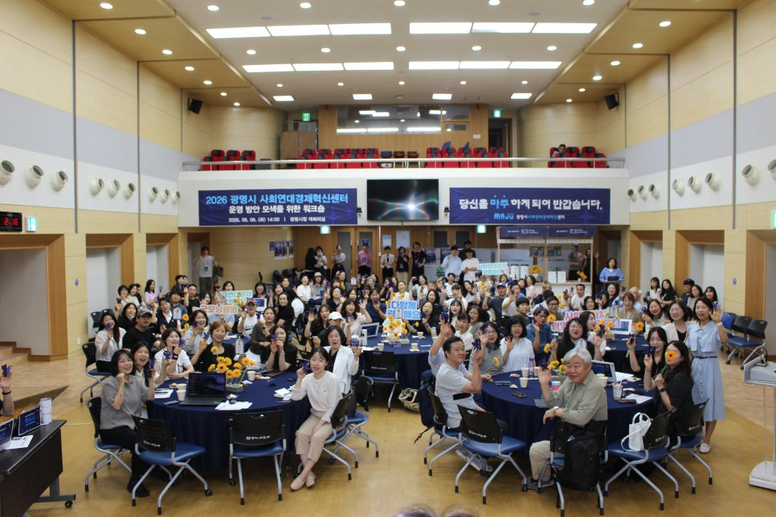
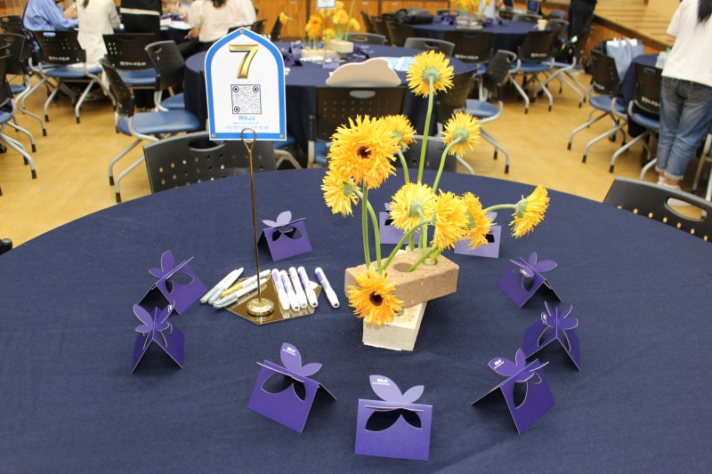
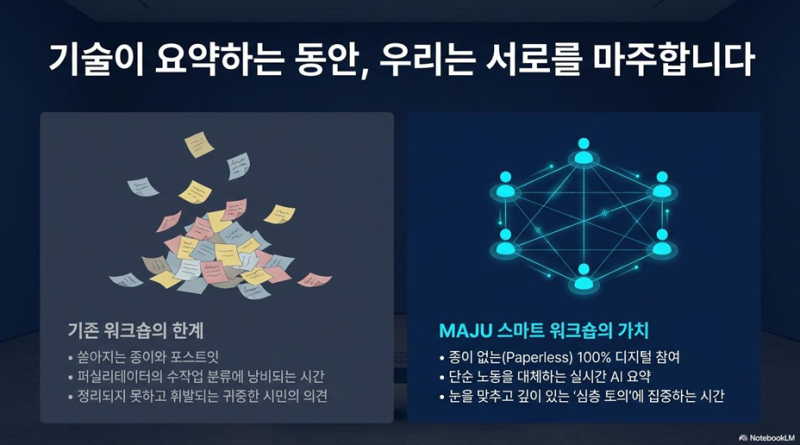
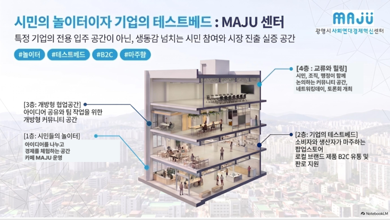
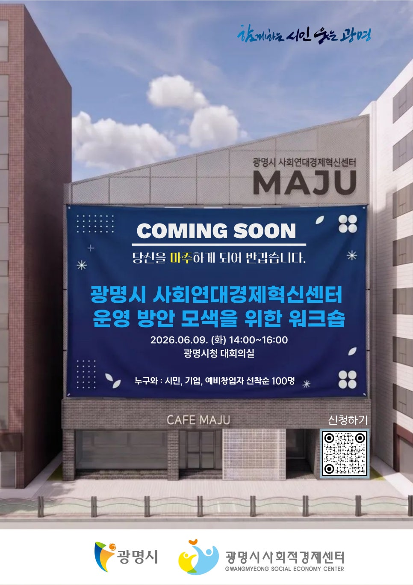

이윤이 아닌 사람·공동체·상생을 중심에 두는 사회연대경제의 가치를, 광명 시민들이 직접 109개의 아이디어로 설계했습니다. 지방정부 최초 전액 시비 투입으로 건립되며 전국이 주목하는 시민 주도 혁신 모델입니다.
"마주센터는 단순한 건물의 개관을 넘어, 시민들이 마주 앉아 신뢰를 쌓고 공동체 가치를 실현하는 공간이 될 것입니다. 워크숍에서 제안한 소중한 의견을 운영 계획에 적극 반영해 오는 9월 개관하는 마주센터가 시민 일상 속에 성공적으로 뿌리내리도록 최선을 다하겠습니다."
— 박승원 광명시장 (광명시청 공식 블로그 취재 발췌)
공식 블로그 기사에서는 행정 혁신 사례로 본 행사의 스마트 설계를 집중 보도했습니다. 종이 한 장 없이 QR코드 수집과 AI 실시간 분류를 이뤄내며 환경 보존과 고도화된 시민 소통을 동시에 잡아냈다는 현장의 감동을 담아냈습니다.
NotebookLM 도입 초기 발생한 일부 할루시네이션(환각 현상)은 향후 프롬프트 엔지니어링 개선 과제로 도출되었습니다. 그러나 시민들은 기술적 오류에 실망하기보다, 적극적 피드백과 집단지성으로 서로 보완해 나가며 진정한 참여형 연대의 희망을 증명했습니다.


모바일 신청 완수자 101명 중 당일 81명이 출석하여 80.2%의 최종 참석 완수율을 보였습니다. 특히 성별 분석에서는 여성이 57명(70.4%)을 기록하여 지역 기반 사회적 혁신 활동에 여성 주체들의 주도성이 대단히 강력함을 입증합니다.
온사회적협동조합, 배움발전소, 모두한발짝, 청소년플러스끌림 사협, 광명시민정원사협동조합, 마음결협동조합, 올솔루션사회적협동조합, 휴가온협동조합, 광명시공익활동지원센터 등
* 40~50대 중추 활동가 층이 전원의 71.6% 점유 | 20대(5명) + 70대이상(2명) = 7명
사회연대경제 관련 단체나 조직들이 상시 활용하는 카카오톡 커뮤니티 단톡방(49.4%)과 믿을 만한 파트너의 직접 추천 권유(28.4%)가 유입의 77.8%를 차지했습니다. SNS(13.6%)·광명소식지(6.2%)·기타(2.5%)를 포함해 전통 행정 홍보 대비 소셜 커뮤니티의 연대 파급력이 높게 증명되었습니다.
※ 무응답이나 소극 유입 없음. 80.2%는 명확한 목적 하에 행동. | 유입 경로 합계 100.0%
배리어프리 친환경 복합 거점. 노인·아동·장애인이 보기에 쉬운 그림 메뉴판 제작, 발달장애인 일자리 창출, 광명동굴 스마트팜 딸기 음료 등 로컬 시그니처 메뉴 판매 제안.
체험 중심 스토리텔링 샵. "폐현수막이 가방이 되기까지" 생산자 중심 스토리 전시, 자원순환 제로웨이스트 클래스, 2층 계단의 피아노 계단화 제안.
지역 밀착 일상 실험실. 주민 안전 보행로 IoT 매핑, 디지털 소외 예층을 위한 생성형 AI 활용, 주민이 직접 묻고 결과를 상시 소통하는 주민제안보드 구축.
예술가 데이 지정을 통한 무전력/무음향 옥상 정원 버스킹, 지역 청년 예술가 상설 아카이빙, 소상공인과 고립 청년들의 치유를 돕는 "실패 공유회" 제안.

| 층수 | 공간 명칭 및 주요 기능 | 지향하는 운영 방식 (테스트베드 전략) |
|---|---|---|
| 1층 | 베이커리 카페 마주 | 장애인·노인·다문화 가정 등 누구에게나 열린 커뮤니티 공간 |
| 2층 | 팝업스토어 및 기획 전시 | 가치소비 제품을 선보이고, 판로를 지원하는 상생의 장 |
| 3층 | 소셜리빙랩 및 공유 공간 | 아이디어 교류와 프로젝트 협업이 이뤄지는 실행 중심 공간 |
| 4층 & 옥상 | 열린 문화 공간 & 회복의 정원 | 문화 프로그램을 즐기는 열린 공간 및 도심 속 루프탑 정원 |
전반적인 행사 운영 만족도 대비 의견 교환 및 토의 소통 부문의 점수(4.22)가 더 높게 나타났습니다. 이는 일방향적 강의 방식을 철저히 지양하고, QR과 AI 요약 기반의 스마트 리프레시 토의가 시민들의 활발한 주도성을 적극 발현했음을 뒷받침합니다.
* 참여 의사 없음 또는 부정적인 피드백 비율은 0.0%로, 본 워크숍에 참여한 시민 전원이 자발적인 공간 주인의식(Citizenship Ownership)을 단단하게 다졌습니다.
"행정안전부 2026년 사회연대경제 혁신모델 공모에 광명시가 최종 선정되었습니다. 마주센터가 이끄는 지역 순환 경제 모델·광명시 공동체 자산화를 더욱 강력하게 추진할 재정적·전략적 기반을 마련했습니다."
— 홍명희 광명시 경제문화국장 (워크숍 1부 공식 발표, 현장 박수갈채)참석자의 80.2%에 달하는 고관여 주체들을 조기에 서포터즈 및 층별 소셜 리더단으로 공식 임명하여 개관 동력을 확보해야 합니다.
시민들은 단순 카페 음료 구매나 상품 구매가 아닌, 제로웨이스트 실천 DIY, 배리어프리, 실패 공감회 등 몸으로 겪는 오감 경험을 원합니다.
스마트 워크숍 중 도출된 AI 할루시네이션 극복 경험을 자산 삼아, 향후 마주센터 운영 프로세스 전반에 '시민 검증단' 및 투명한 제안 피드백 채널을 구축하여 상호 신뢰와 기술 혁신을 함께 완성합니다.
